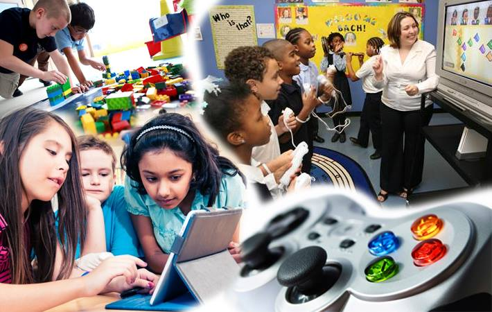

19
Maio/2017

JOÃO IGOR
Os jogos educativos são uma ferramenta eficaz na aprendizagem. Além de serem ótimos
presentes criativos, ajudam na motivação do aluno, contribuem como estratégias alternativas
para o desenvolvimento de conteúdos, na aquisição de certas habilidades, pois muitos possuem
mais facilidade para aprender e memorizar através desse método. A maneira de ensinar é lúdica,
não é cansativa e ajuda despertar o interesse. Influencia não só o processo intelectual,
cognitivo, mas também as relações sociais e as maneiras de agir diante das coisas.
Saiba um pouco mais sobre a importância dos jogos educativos, os diversos tipos existentes,
algumas dicas de jogos para aplicar em sala de aula e a importância e os cuidados dos jogos online.